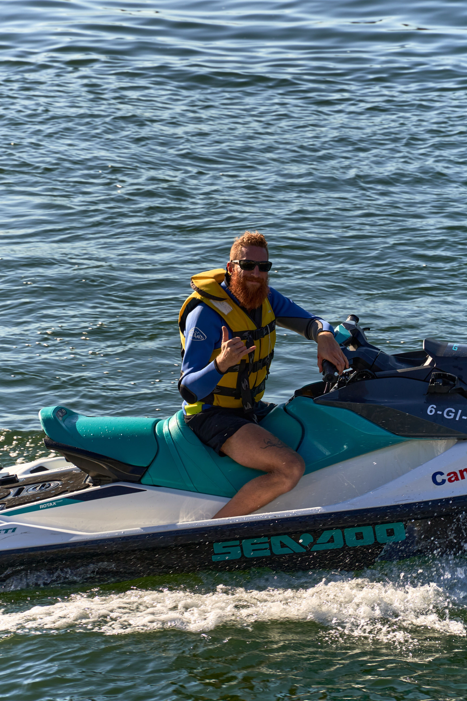
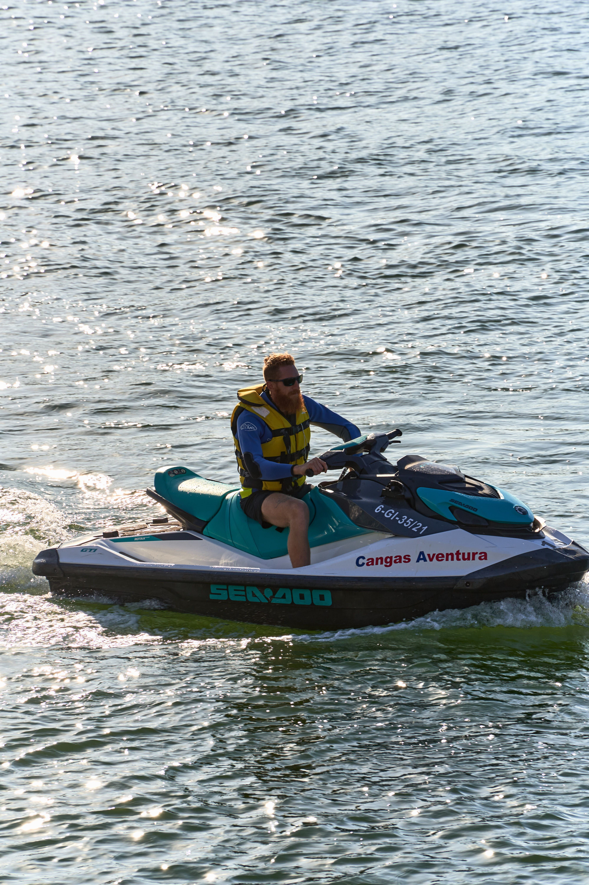
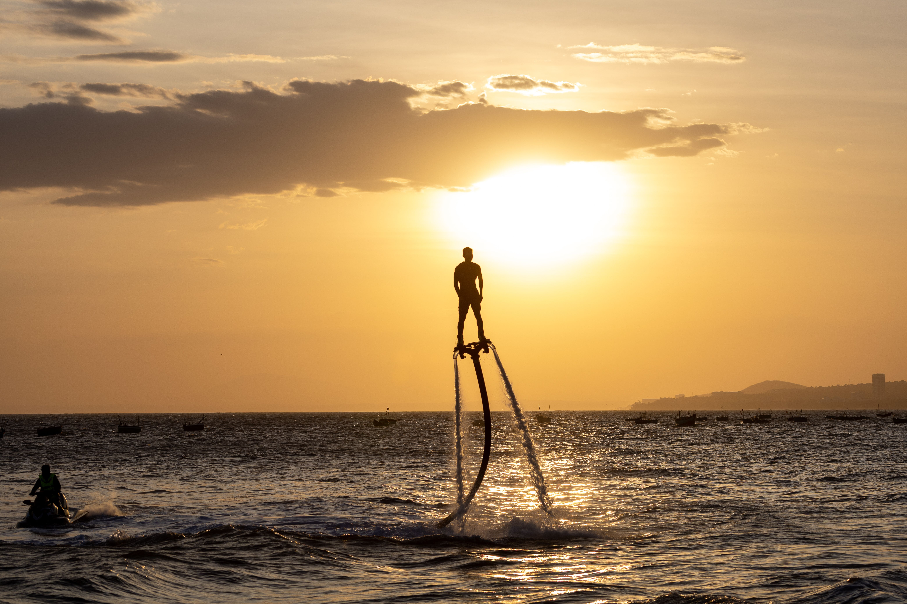
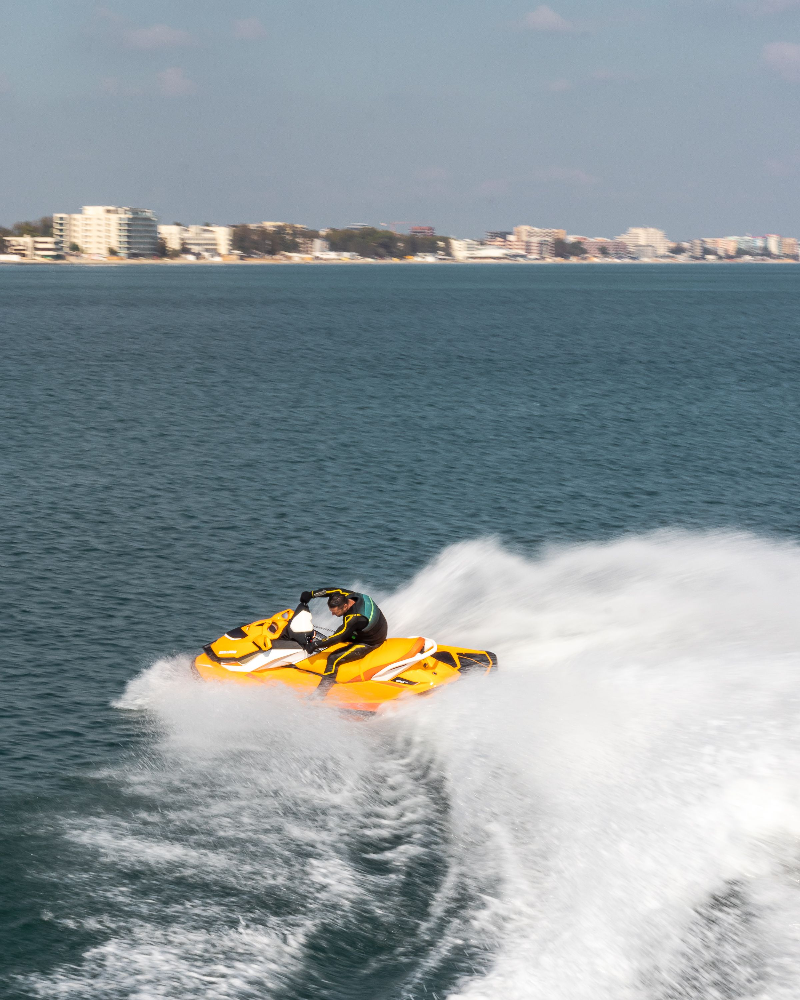
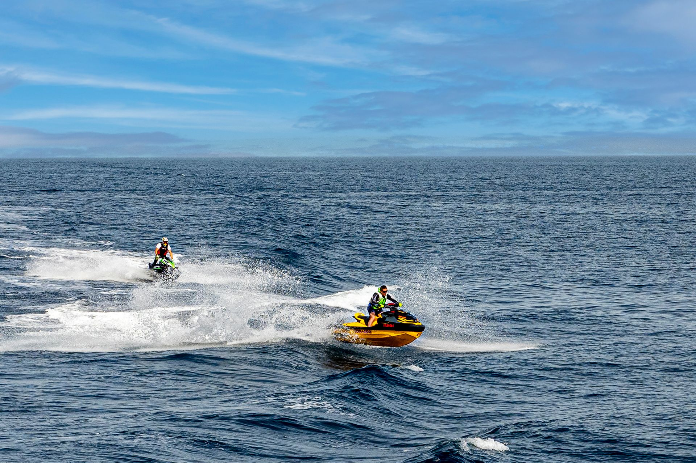
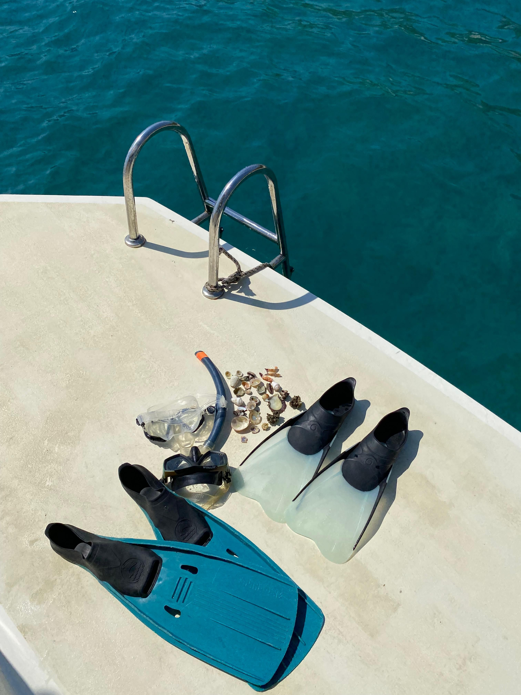
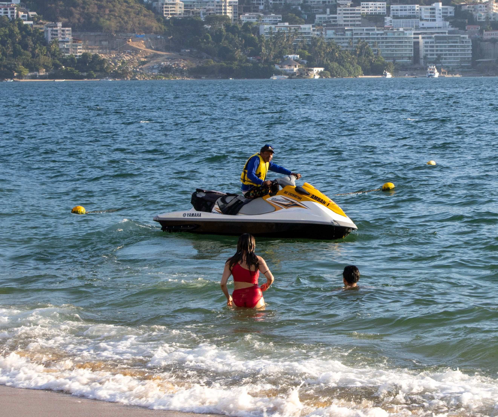
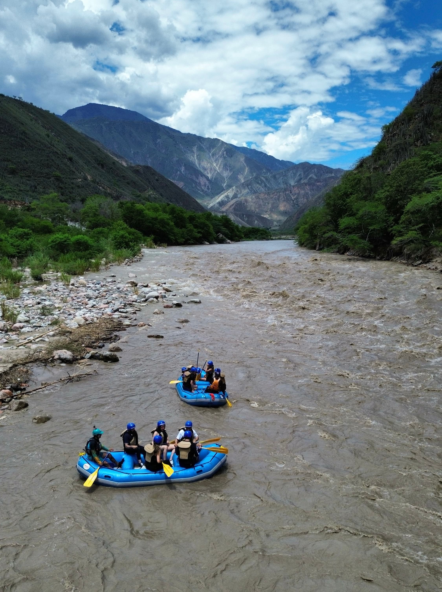

Cañón del Chicamocha
Rafting nivel III-IV con vistas de vértigo.

Rafting, trekking y expediciones guiadas para quienes buscan algo más que un viaje.
Ver destinosCada destino combina paisaje, adrenalina y guías certificados.

Rafting nivel III-IV con vistas de vértigo.

Trekking de dos días entre páramos y lagunas.

Expedición guiada por bosque húmedo y cascadas.

Descenso tranquilo ideal para principiantes.

Somos un equipo de guías certificados con más de diez años recorriendo los Andes. Creemos que la aventura debe ser segura, responsable con el entorno y memorable. Cada expedición se planifica con equipo homologado y grupos reducidos para garantizar una experiencia cercana y personalizada.
Trabajamos con comunidades locales en cada destino, generando turismo sostenible que beneficia directamente a quienes habitan estos territorios. Así, cada viaje que haces con nosotros también deja una huella positiva.



"La mejor experiencia de rafting que he tenido. Guías muy profesionales."
— Laura M.
"El trekking de montaña superó todas mis expectativas."
— Andrés R.
"Organización impecable y paisajes increíbles."
— Camila S.